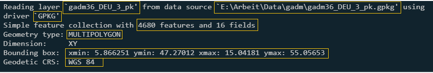
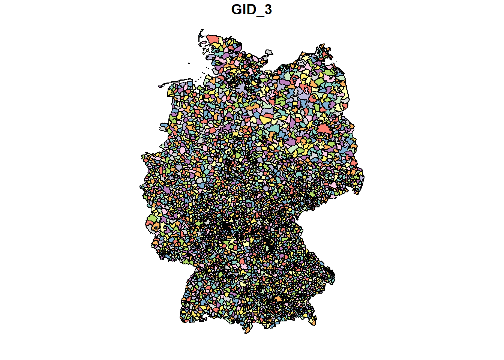
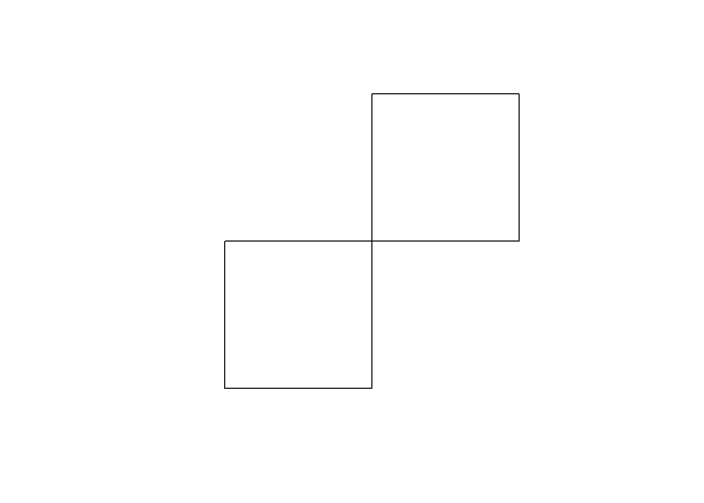
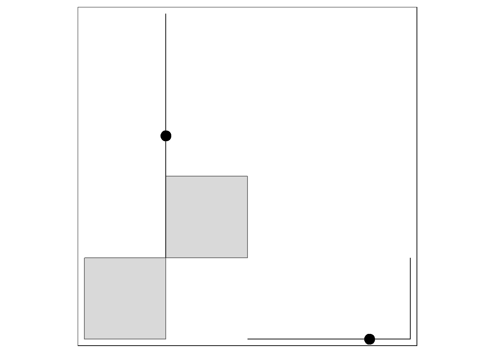
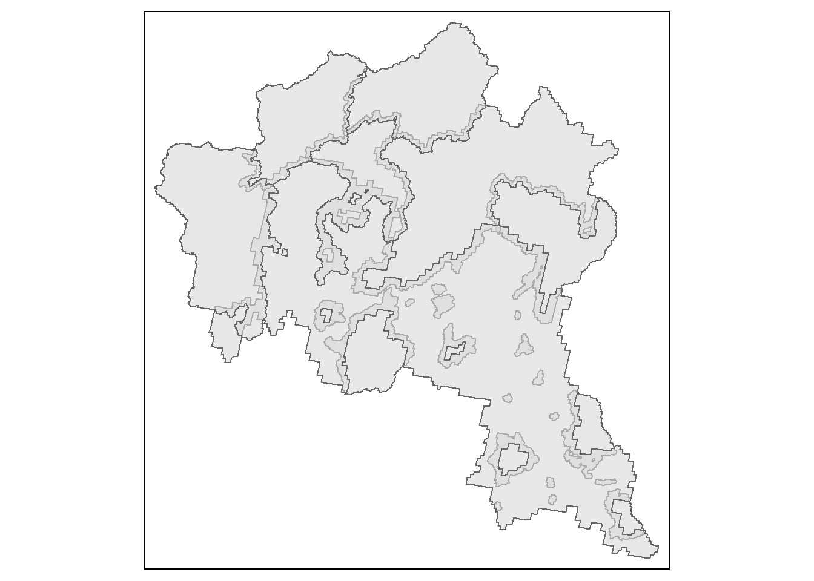
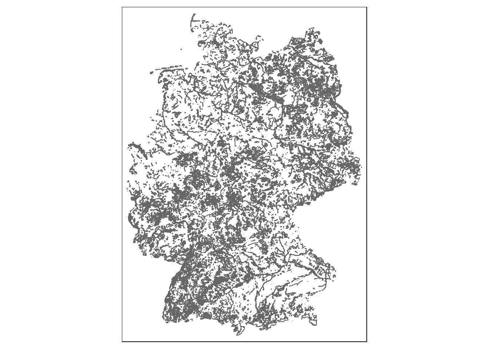
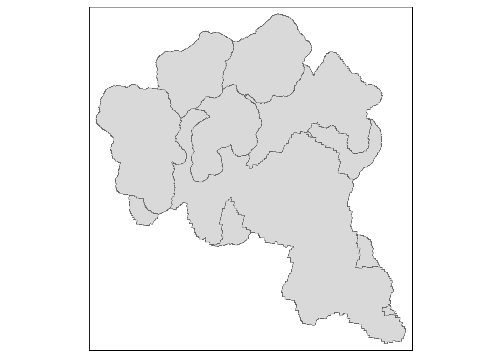
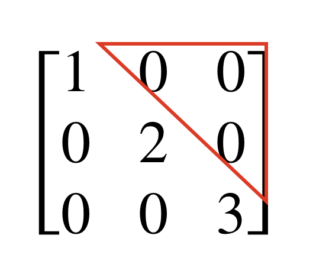
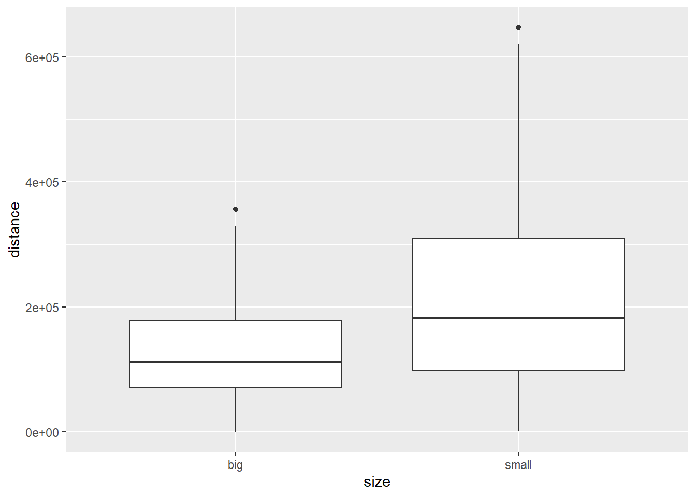
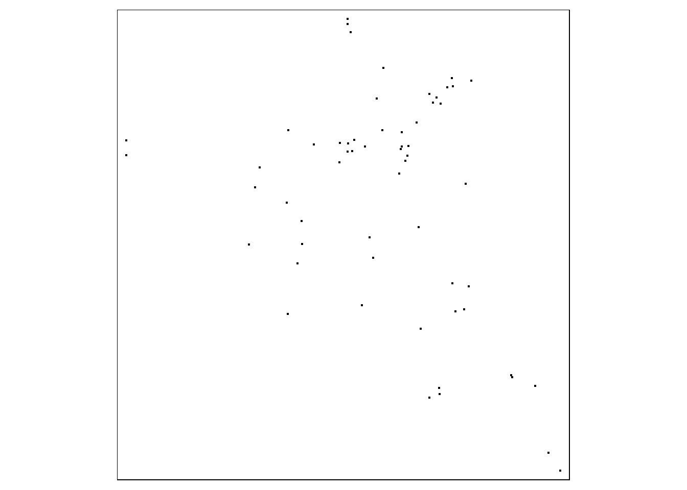

Spatial Data Science in R
2024-11-18
Chapter 1 Introduction to the sf package
The most common way to handle spatial data in R is with the sf package (Pebesma 2018).
In this first chapter, you will learn the basics of sf - everything you need to load, visualize, alter, and analyze spatial data in R.
If you are looking more comprehensive introduction to sf and some additional packages, a great and free resource are the books Geocomputation in R (Lovelace, Nowosad, and Muenchow 2019) available here and Spatial Data Science (Pebesma and Bivand 2022) available here.
1.1 Loading spatial data into R
First we need to install and load the sf package.
You only need to install the package once with
When the package is already installed. You can use library() or require() to load it.
For you purposes, it makes no difference which of the two functions you use.
You need to load the package at the start of each new R session, so every time you start R.
## Linking to GEOS 3.12.1, GDAL 3.8.4, PROJ 9.3.1; sf_use_s2() is TRUEExercise 1.1
- Install and load the sf R package
sf establishes a connection between the running R instance and three other programs: GEOS, GDAL and PROJ.
GEOS and GDAL are collections of functions to read, modify, and write geodata; PROJ transforms geodata from one coordinate reference system to another.
Next, we want to load files into R.
Before we can do that, you need to set your working directory.
A working directory in R is the default location on your computer where R will look for files to read and where it will save files you create. It’s essentially the main folder R is operating in during your current session. You can check your current working directory using the getwd() function and change it using setwd().
Below, I set my working directory.
You have to adjust the working directory to your folder structure.
There are some tricks and rules to defining a path in R.
Once you have written the quotation marks (““) and place your cursor between them, you can summon a list of all folders in the current working directory by hitting the tabulator key.
By default any path you enter is relative to your current working directory.
If you want to go back to the root directory of your computer start with the tilde ("~") as I did above.
If instead, you want to use a relative path, and need to go higher in the folder structure, use "../".
If you are not sure how to write the path to your desired folder you can use the file.choose() function.
After executing the function a window prompt will open where you can select the desired folder in a point-and-click fashion.
In the function you have to choose a file by double-clicking it.
R will now print the path to the selected file in the console.
The argument to setwd() needs to be the path to a folder.
Therefore, to use the path file.choose() provided you need to remove the file name from the path.
Exercise 1.2
- Create a folder where you will store all your files for this class
- Set the working directory to that folder
With the command st_read(), we read the geopackage file gadm36_DEU_3_pk.gpkg (download here).
The function starts, like all functions in sf, with st_, short for spatiotemporal.
## Reading layer `gadm36_DEU_3_pk' from data source `C:\Users\jonat\Documents\001_Uni\002_teaching\online books\book_spatial_data_science_in_R\data\gadm36_DEU_3_pk.gpkg' using driver `GPKG'
## Simple feature collection with 4680 features and 16 fields
## Geometry type: MULTIPOLYGON
## Dimension: XY
## Bounding box: xmin: 5.866251 ymin: 47.27012 xmax: 15.04181 ymax: 55.05653
## Geodetic CRS: WGS 84After the file is loaded, we automatically get a set of information.

These are from left to right and top to bottom following the yellow boxes: The layer name of the loaded file. This is not the object name in R, but the name stored in the geopackage (gpkg) file; where the file is located on disk; the file format (here GPKG); the number of rows (features, 4680) and columns (fields, 16); the feature type (GeometryType); the bounding box, i.e., minimum and maximum x and y coordinate data or longitude and latitude, and finally the coordinate reference system.
If we now open the object in R, we see the following:
## Simple feature collection with 4680 features and 16 fields
## Geometry type: MULTIPOLYGON
## Dimension: XY
## Bounding box: xmin: 5.866251 ymin: 47.27012 xmax: 15.04181 ymax: 55.05653
## Geodetic CRS: WGS 84
## First 10 features:
## GID_0 NAME_0 GID_1 NAME_1 NL_NAME_1 GID_2 NAME_2 NL_NAME_2 GID_3 NAME_3 VARNAME_3 NL_NAME_3 TYPE_3 ENGTYPE_3
## 1 DEU Germany DEU.1_1 Baden-Württemberg <NA> DEU.1.1_1 Alb-Donau-Kreis <NA> DEU.1.1.1_1 Allmendingen <NA> <NA> Verwaltungsgemeinschaft Municipality
## 2 DEU Germany DEU.1_1 Baden-Württemberg <NA> DEU.1.1_1 Alb-Donau-Kreis <NA> DEU.1.1.2_1 Blaubeuren <NA> <NA> Verwaltungsgemeinschaft Municipality
## 3 DEU Germany DEU.1_1 Baden-Württemberg <NA> DEU.1.1_1 Alb-Donau-Kreis <NA> DEU.1.1.3_1 Blaustein <NA> <NA> Einheitsgemeinde Municipality
## 4 DEU Germany DEU.1_1 Baden-Württemberg <NA> DEU.1.1_1 Alb-Donau-Kreis <NA> DEU.1.1.4_1 Dietenheim <NA> <NA> Verwaltungsverband Municipality
## 5 DEU Germany DEU.1_1 Baden-Württemberg <NA> DEU.1.1_1 Alb-Donau-Kreis <NA> DEU.1.1.5_1 Dornstadt <NA> <NA> Verwaltungsgemeinschaft Municipality
## 6 DEU Germany DEU.1_1 Baden-Württemberg <NA> DEU.1.1_1 Alb-Donau-Kreis <NA> DEU.1.1.6_1 Ehingen (Donau) <NA> <NA> Verwaltungsgemeinschaft Municipality
## 7 DEU Germany DEU.1_1 Baden-Württemberg <NA> DEU.1.1_1 Alb-Donau-Kreis <NA> DEU.1.1.7_1 Erbach <NA> <NA> Einheitsgemeinde Municipality
## 8 DEU Germany DEU.1_1 Baden-Württemberg <NA> DEU.1.1_1 Alb-Donau-Kreis <NA> DEU.1.1.8_1 Kirchberg-Weihungstal <NA> <NA> Verwaltungsverband Municipality
## 9 DEU Germany DEU.1_1 Baden-Württemberg <NA> DEU.1.1_1 Alb-Donau-Kreis <NA> DEU.1.1.9_1 Laichinger Alb <NA> <NA> Verwaltungsverband Municipality
## 10 DEU Germany DEU.1_1 Baden-Württemberg <NA> DEU.1.1_1 Alb-Donau-Kreis <NA> DEU.1.1.10_1 Langenau <NA> <NA> Verwaltungsverband Municipality
## CC_3 HASC_3 geom
## 1 084255001 <NA> MULTIPOLYGON (((9.777709 48...
## 2 084255002 <NA> MULTIPOLYGON (((9.775818 48...
## 3 084250141 <NA> MULTIPOLYGON (((9.827528 48...
## 4 084255003 <NA> MULTIPOLYGON (((10.00971 48...
## 5 084255004 <NA> MULTIPOLYGON (((9.972806 48...
## 6 084255005 <NA> MULTIPOLYGON (((9.803958 48...
## 7 084250039 <NA> MULTIPOLYGON (((9.837822 48...
## 8 084255006 <NA> MULTIPOLYGON (((10.02729 48...
## 9 084255007 <NA> MULTIPOLYGON (((9.708008 48...
## 10 084255008 <NA> MULTIPOLYGON (((9.946911 48...The header is similar to what we have already seen when reading the file. Below are the first ten rows and all columns. The object has the classes:
## [1] "sf" "data.frame"For the most part, we can handle sf objects like normal data frames.
We can use the [ subsetting operations.
## Simple feature collection with 4680 features and 1 field
## Geometry type: MULTIPOLYGON
## Dimension: XY
## Bounding box: xmin: 5.866251 ymin: 47.27012 xmax: 15.04181 ymax: 55.05653
## Geodetic CRS: WGS 84
## First 10 features:
## GID_0 geom
## 1 DEU MULTIPOLYGON (((9.777709 48...
## 2 DEU MULTIPOLYGON (((9.775818 48...
## 3 DEU MULTIPOLYGON (((9.827528 48...
## 4 DEU MULTIPOLYGON (((10.00971 48...
## 5 DEU MULTIPOLYGON (((9.972806 48...
## 6 DEU MULTIPOLYGON (((9.803958 48...
## 7 DEU MULTIPOLYGON (((9.837822 48...
## 8 DEU MULTIPOLYGON (((10.02729 48...
## 9 DEU MULTIPOLYGON (((9.708008 48...
## 10 DEU MULTIPOLYGON (((9.946911 48...## Simple feature collection with 1 feature and 16 fields
## Geometry type: MULTIPOLYGON
## Dimension: XY
## Bounding box: xmin: 9.61846 ymin: 48.29861 xmax: 9.822202 ymax: 48.36533
## Geodetic CRS: WGS 84
## GID_0 NAME_0 GID_1 NAME_1 NL_NAME_1 GID_2 NAME_2 NL_NAME_2 GID_3 NAME_3 VARNAME_3 NL_NAME_3 TYPE_3 ENGTYPE_3 CC_3
## 1 DEU Germany DEU.1_1 Baden-Württemberg <NA> DEU.1.1_1 Alb-Donau-Kreis <NA> DEU.1.1.1_1 Allmendingen <NA> <NA> Verwaltungsgemeinschaft Municipality 084255001
## HASC_3 geom
## 1 <NA> MULTIPOLYGON (((9.777709 48...Exercise 1.3
- Read the germany data into R
- Create a subset that only contains the first 10 rows
- Create a subset that only contains the last 10 rows
- Create a subset that only contains the columns: “NAME_3”, “TYPE_3”, and geom.
However, when we subset the columns of an sf object, we always keep the geom or geometry column.
Usually, this is convenient because this column contains the spatial coordinates of the objects.
Because it is not removed in these selection operations, the geom column is a so-called sticky column.
However, if you want to remove this column explicitly, you can use st_drop_geometry().
The geom column is different in another way - it is a list column.
Unlike other columns that are vectors, it is a list, which means that it can store different kinds of data or multiple entries in a single cell.
This makes sense, as the geometry column needs to store the coordinates for all points of a multi point, line, or polygon.
The geom column has the class sfc.
## [1] "sfc_MULTIPOLYGON" "sfc"sfc is short for simple feature column, i.e., a column for simple features.
The individual elements in the column have the class sfg, simple feature geometry.
sfg are the individual geometric shapes (points, lines, polygons, …).
Below, we will create sfg objects ourselves and compose an sf object from them.
An object of class sf can be visualized with plot().
For this plot, I subset the data set to the first ten rows and three columns.
As you can see, by default each variable is plotted individually. Plots with single variables are created when we subset the dataset to one variable.

Exercise 1.4
- Plot the variable
NAME_2
1.2 Creating spatial data yourself

In sf, we can create spatial objects ourselves.
This is rarely necessary since we usually work with data that was created in other projects, but later procedures are easier to understand once you have gone through the process from the beginning. The functions to create geometric shapes follow a simple rule: st_ + name of the geometryType. So to create a point we use:
point1 is a point with coordinates 1 1 and has the classes , XY, POINT, and sfg.
## [1] "XY" "POINT" "sfg"
Exercise 1.5
Create a point with the coordinates 3 5
Lines consist of several coordinates which are connected with each other.
The single coordinates are vectors (c()) just like st_point().
We could use lists, matrices, or data.frames to st_linestring() with several point coordinates.
The easiest way is to use matrices with two columns (one for X and one for Y coordinates) and as many rows as coordinate pairs.
In the example we create a line with the coordinates 1 1, 1 2, 2 2, 2 3.
The function matrix() creates a matrix, similar to a data.frame but all columns have the same class, so everything is numeric, character, or boolean. With the data argument we tell R what values this matrix should hold. With ncol = 2, we determine that the matrix will have two columns, and with byrow we establish, that the values will be put into the matrix row-by-row instead of column-by-column. By default, matrices in R are filled column by column, not row by row.
Let’s have a look at this matrix.
## [,1] [,2]
## [1,] 1 1
## [2,] 1 2
## [3,] 2 2
## [4,] 2 3Now, we can turn this into a line with st_linestring and plot it with plot().

This works but I find the coordinates hard to read in the call to matrix(). It is not instantly clear which values form a pair, especially if the matrix would be larger. Below, I will show an easy-to-read approach.
We create single vectors (c()) with the coordinates for each point and provide these vectors as argument to the rbind() function. The function rbind() (short for row bind) takes single vectors and combines them as rows of a matrix.
line_coordinates <-
rbind(
c(1,1),
c(1,2),
c(2,2),
c(2,3)
)
line1 <- st_linestring(line_coordinates)
plot(line1)
As you can see, the result is the same, but the single coordinates are not in one long vector.
The equivalent function for columns is called cbind() (column bind).
With the object line_coordinates, we can also create a multipoint.
Exercise 1.6
- Create a line with the coordinates 00 01 02 03 14 24 34 44
When we have a single polygon it looks like a LineString with the difference that the first coordinate pair and the last are the same. Also note that the argument to st_polygon() needs to be a list. So we additionally wrap polygon_coordinates in a call to list() within our call to st_polygon().
polygon_coordinates <-
rbind(
c(1,1),
c(1,2),
c(2,2),
c(2,1),
c(1,1)
)
polygon1 <- st_polygon(list(polygon_coordinates))
plot(polygon1)
MultiLineStrings and Multipolygons are also created with lists.
multilinestring_coordinates1 <- rbind(c(1, 1), c(1, 2), c(1, 3), c(1, 4))
multilinestring_coordinates2 <- rbind(c(2, 0), c(3, 0), c(4, 0), c(4, 1))
multilinestring_coordinates <- list(multilinestring_coordinates1, multilinestring_coordinates2)
multilinestring1 <- st_multilinestring(multilinestring_coordinates)
plot(multilinestring1)
Exercise 1.7
Extend the coordinates of the line you created in exercise 1.6 to become a polygon.
multipolygon_coordinates <-
list(
list(
rbind(c(0, 0), c(0, 1), c(1, 1), c(1, 0), c(0, 0))
),
list(
rbind(c(2, 1), c(2, 2), c(1, 2), c(1, 1), c(2, 1))
)
)
multipolygon1 <- st_multipolygon(multipolygon_coordinates)
plot(multipolygon1)
Geometry collections are single geometric objects, i.e., a single row in an sf object, that combine different GeometryTypes.
geometrycollection1 <-
st_geometrycollection(x = list(
st_multipolygon(multipolygon_coordinates),
st_multilinestring(multilinestring_coordinates)
))
plot(geometrycollection1)
1.3 Basic operations
So far, our objects have geometric shapes, but they are not truly spatial.
They are not connected to locations on earth, because they don’t have a coordinate reference system (CRS).
With the command st_crs(), we assign a CRS to an sf object.
Alternatively, we can do this in st_sfc() when we turn an sfg into an sfc or in st_as_sf when we turn an sfc into an sf.
We can use different formats to describe the CRS, but in practice the EPSG code is the easiest.
We assign geometrycollection1 the CRS World Geodetic Survey 1984 (WGS84) with the EPSG code 4326.
geometrycollection_sfc <- st_sfc(geometrycollection1, crs = "EPSG:4326")
geometrycollection_sf <- st_as_sf(geometrycollection_sfc)Exercise 1.8
- Create a geometry collection
- Create two version of this geometry collection. Once with the CRS EPSG:3035 and once with the CRS EPSG:4326.
There are many superior alternatives to the plot() function to create maps in R.
Here, we will use the tmap package (Tennekes 2018).
Each tmap has at least two elements:
1. tm_shape() The spatial object you want to map.
2. the geometric shape you want to use: tm_dots() for points, tm_lines() for lines and tm_polygons() for polygons.
These elements are combined with a +.
There are no limits to how many objects or geometric shapes you can include in a single map.
If you want to use different objects in one map you can call tm_shape() again with the next object after the +.
## Breaking News: tmap 3.x is retiring. Please test v4, e.g. with
## remotes::install_github('r-tmap/tmap')## tmap mode set to plotting
With tmap you can create interactive and static maps.
Interactive maps are great to explore your data, to check if you have specified the correct CRS, or for interactive documents in html format like this book.
To create interactive maps you have to change the tm_mode from "plot" to "view".
## tmap mode set to interactive viewingAfter that, the same function as before will create interactive maps.
Exercise 1.9
- Create an interactive map in which you display the geometry collection from Exercise 1.8.
- Why are the objects apart? Whats the main difference between the two CRS? Discuss with your neighbor.
1.4 Useful functions
The names of the functions in sf are mostly self-explanatory.
You can often just type sf::, scroll through the list of functions that appears, and with some background knowledge and imagination you’ll find what you’re looking for. This works especially well if you combine this tactic with the help function (?function_name or highlight function in editor and press F1). So, let’s have a look at some useful functions.
1.4.1 st_area
With st_area() we can determine the area of polygons.
## Units: [m^2]
## [1] 53640075 105002330 54804352 54609171 86775447 202944902 62872917 50128777 171435663 220499041## [1] "units"germany_area has the class units which was introduced by the eponymous package (Pebesma, Mailund, and Hiebert 2016).
This package is really handy. It allows for automatic propagation, conversion, derivation and simplification of units. It also raises errors in case of unit incompatibility. For example, we can transform the areas we just computed from square meters to square kilometers
## Units: [km^2]
## [1] 53.64008 105.00233 54.80435 54.60917 86.77545 202.94490 62.87292 50.12878 171.43566 220.49904If I now try to combine the measurements in \(m^2\) and \(km^2\), this still works
## Units: [km^2]
## [1] 0 0 0 0 0 0 0 0 0 0Even if units is quite handy, some functions can’t handle this object class properly.
It often makes sense to transform the objects back to ordinary numbers.
With units::drop_units(), we can convert the object into simple numbers.
To visualize what we have just computed, it would be great to make map, in which every polygon is colored according to its area. To do this, we first create a variable called area in germany with the mutate() function from the dplyr package (Wickham et al. 2022).
## tmap mode set to plottingThe mapview Package only has one important function, mapview(). With the zcol argument, we set the name of the column that determines the color. However, this is not obligatory.
Exercise 1.10
- Compute the size of German administrative districts.
- Transform the size to square kilometers.
- Add the area as a variable to the administrative districts object.
- Select and plot only those districts that are larger than the median district size.
1.4.2 st_bbox()
With the st_bbox() function we can extract the bounding box from an sf object.
## xmin ymin xmax ymax
## 5.866251 47.270123 15.041815 55.056526As you can see, this is not an sf object but …
## [1] "bbox"… a bbox. Technically, this is just a named vector with four elements. However, sf can easily turn this into a polygon.
1.4.3 st_buffer()
If we want to buffer data, this is done with st_buffer().
To demonstrate this function, we will use dplyr::filter(), and select only one district in the Germany data.

Exercise 1.11
- select another district from Germany
- buffer your district by 1000 meters
1.4.4 st_coordinates()
sf can work with not inherently spatial file formats, like .csv.
For this, we first load the .csv file picea_abies.csv here into R using the base R function read.csv().
Let’s have a look at the data.
## locality X Y
## 1 Abtwald 12.918306 50.70953
## 2 Pastorenbruch, Kupferberg, Bärenhöhe 10.789557 51.65258
## 3 FFH-Gebiet 5322-306 Lauter und Eisenbach 9.344114 50.60485
## 4 NSG Feldatal (FFH-Teilgebiet 5320-303 Feldatal/Kahlofen und Ohmaue) 9.139766 50.68140
## 5 NSG Battenfelder Driescher 8.638373 51.04513
## 6 Eckerstausee 10.589198 51.83755We have a location name and two coordinates. We can turn this into an sf object with the st_as_sf() function.
All we need is the object, the names of the columns that contain the X and Y coordinates, and the coordinates reference system. For the latter, the EPSG code is typically sufficient.
## Simple feature collection with 7942 features and 1 field
## Geometry type: POINT
## Dimension: XY
## Bounding box: xmin: 8.110204 ymin: 50.28763 xmax: 13.30139 ymax: 52.60144
## Geodetic CRS: WGS 84
## First 10 features:
## locality geometry
## 1 Abtwald POINT (12.91831 50.70953)
## 2 Pastorenbruch, Kupferberg, Bärenhöhe POINT (10.78956 51.65258)
## 3 FFH-Gebiet 5322-306 Lauter und Eisenbach POINT (9.344114 50.60485)
## 4 NSG Feldatal (FFH-Teilgebiet 5320-303 Feldatal/Kahlofen und Ohmaue) POINT (9.139766 50.6814)
## 5 NSG Battenfelder Driescher POINT (8.638373 51.04513)
## 6 Eckerstausee POINT (10.5892 51.83755)
## 7 Stadtwald Mengeringhausen und Umgebung POINT (8.947862 51.3599)
## 8 Taunus bei Hausen, Am Hühnerturm POINT (8.630587 50.42718)
## 9 Löhlbach, Wesetal POINT (8.974815 51.07919)
## 10 Bohngartental Marksuhl POINT (10.21233 50.91634)Note that the columns containing the coordinates (X and Y) were replaced by the geometry column.
Here, I deactivated the legend (legend = FALSE) because there is too many elements.
When we transform the sf object back to a data.frame we still keep the geometry column.
To get the coordinates back we can use the st_coordinates() function. The function creats a matrix with coordinates.
## X Y
## [1,] 12.918306 50.70953
## [2,] 10.789557 51.65258
## [3,] 9.344114 50.60485
## [4,] 9.139766 50.68140
## [5,] 8.638373 51.04513
## [6,] 10.589198 51.83755Exercise 1.12
- load the picea abies data
- turn the data set into an sf object
- extract the coordinates from the sf object
1.5 Geometric set operations
There are four distinct geometric operations for pairs of simple feature geometries:
1. st_intersection
- st_snap
Basically, all of these functions take two arguments (x and y) — two simple feature geometries (i.e., sf objects), which are combined in some way. We will use the natura2000 area in Germany as a demonstration. You can download the data here. st_intersection() checks whether x and y intersect.
## Reading layer `intersection' from data source `C:\Users\jonat\Documents\001_Uni\002_teaching\online books\book_spatial_data_science_in_R\data\natura 2000\natura2000_deutschland.gpkg' using driver `GPKG'
## Simple feature collection with 5274 features and 100 fields
## Geometry type: MULTIPOLYGON
## Dimension: XY
## Bounding box: xmin: 4038514 ymin: 2684315 xmax: 4671424 ymax: 3552221
## Projected CRS: ETRS89-extended / LAEA EuropeThis data set has many variables we don’t care about. We will clean it up first.
##
## Attache Paket: 'dplyr'## Die folgenden Objekte sind maskiert von 'package:stats':
##
## filter, lag## Die folgenden Objekte sind maskiert von 'package:base':
##
## intersect, setdiff, setequal, unionLet’s have a look at the data.

To render this data set simpler, we will reduce it to areas within a 100km radius around Goslar.
First, we create a buffer. For this we need to unify Goslar. Currently Goslar consist of multiple Polygons — one for each administrative unit. If we buffer goslar, each polygon is buffered independently. We can quickly play through this.

The dark blue areas are overlapping areas.
What we want instead is a singe polygon including all of goslar. We want to dissolve the internal boundaries.
We can do this with st_union(). The result of st_union() is an sfc object, so we need to turn it back into an sf object with st_as_sf().
Then we harmonize the CRSs.
Now lets proceed to the intersection.
## Warning: attribute variables are assumed to be spatially constant throughout all geometriesThe result only shows the parts of natura2000 that fall within the 1000 kilometer buffer around goslar The resulting object has all variables from goslar2 and natura2000 but because goslar2 did not have any variables, it’s actually just those from natura2000.
## Simple feature collection with 6 features and 2 fields
## Geometry type: POLYGON
## Dimension: XY
## Bounding box: xmin: 4244053 ymin: 3073390 xmax: 4395728 ymax: 3252810
## Projected CRS: ETRS89-extended / LAEA Europe
## SITENAME SOVEREIGNT geom
## 4 Binnensalzstelle Klein Oedesse Germany POLYGON ((4336116 3252773, ...
## 6 Huxstein Germany POLYGON ((4244128 3153234, ...
## 8 NSG Tännreisig Germany POLYGON ((4395689 3073831, ...
## 434 Bachlauf der Warme von Ehlen bis Liebenau Germany POLYGON ((4273429 3150123, ...
## 435 Ballertasche Germany POLYGON ((4296055 3149374, ...
## 457 Wendesser Moor Germany POLYGON ((4337001 3250162, ...Note that the natura2000 polygons at the border of the buffer where cut off there.
There is a second option to perform intersections with sf, with the st_intersects() function.
## Sparse geometry binary predicate list of length 5274, where the predicate was `intersects'
## first 10 elements:
## 1: (empty)
## 2: (empty)
## 3: (empty)
## 4: 1
## 5: (empty)
## 6: 1
## 7: (empty)
## 8: 1
## 9: (empty)
## 10: (empty)inter2 is a sparse geometry binary predicate (sgbp). It is a list with as many elements as natura2000 (5274). Each row thus corresponds to one row in natura2000. The number in that row indicates with which element of goslar100k the row intersects.
Exercise 1.13
- Is there any other element than 1 in inter2?
With apply(X, margin, FUN) we can apply a function (FUN) to the elements of X. The margin determines it it is applied to each row (margin = 1) or to each column (margin = 2). So apply(data_example,2,sum) would compute the column sums of data_example. With …
… we get a vector of TRUE and FALSE. It is TRUE if the corresponding line in inter2 holds a value and FALSE if that line is empty. With this vector we can subset natura2000 to the intersecting elements.
This basically works the same with st_difference() for the difference.
## Warning: attribute variables are assumed to be spatially constant throughout all geometriesExercise 1.14
- Take any Kreis in Germany, unify it, and buffer it by 50 km
- Intersect it with natura2000.
- Now take the unbuffered Kreis to remove those areas from the intersection you created in the step before.
1.5.1 st_distance
With st_distance() we can determine the distance between two objects.
The objects you want to use need to have an CRS otherwise R wont now what the distance unit is.
As a first example, we just pick to random German districts and compute the distance between them.
## Units: [m]
## [,1]
## [1,] 85111.62We get a units matrix with the shortest distance between the two polygons. Note, that this is not the distance between the centroids but between the borders of the polygons. If we supply the function with vectors, the following happens:
## Units: [m]
## [,1] [,2] [,3]
## [1,] 118532.39 116637.04 97183.43
## [2,] 82949.84 81943.49 61832.11
## [3,] 105208.29 105789.91 85111.62Now the distance matrix has three times three elements. Each gives the distance between two of the elements from the original vectors. A question we might ask with this tool is are the ten largest districts closer to each other than the ten smallest.
big10 <- germany |>
# sort by area, decreasing so smallest value on top
dplyr::arrange(area) |>
# take only the last 10 rows, i.e. the ten largest districts.
dplyr::slice_tail(n = 10)
big10 <- st_distance(big10)This time, we only use one dataset, so the distance from each polygon to each polygon is calculated. In cell 3, row 2 is the distance from centroid of the third polygon to the second. Since the distance from the third to the second is equal to the distance from the second to the third, the matrix is symmetric. The diagonal contains the distances of objects to themselves, i.e. 0.
big10 <- big10 |> units::drop_units()
big10 <- big10[upper.tri(big10)]
small10 <-
germany |>
dplyr::arrange(area) |>
dplyr::slice_head(n = 10) |>
sf::st_distance() |>
units::drop_units() |>
{\(x) x[upper.tri(x)]}()With upper.tri() I select the upper triangle of the matrix (see figure below) so I don’t have every value twice. This also removes the diagonal.

For small10 we do the same, but this time with pipe operators. The only differences here are that slice_tail() has been replaced by slice_head() and the annonymous function at the end of the pipe. Anonymous functions are functions without a name. They are not stored as objects but executed directly. In R since version 4.1 we can create anonymous functions as follows:
## [1] 9## [1] 9Now we still need to package the results in a data set and display them. For the latter, we use the ggplot2 package (Wickham 2016) here. See here for an introduction.
library(ggplot2)
data <- data.frame(size = rep(c("big", "small"), each = 45),
distance = c(big10, small10))
ggplot(data, aes(y = distance, x = size)) + geom_boxplot()
So we see that the median distance between the ten largest counties is slightly smaller than that between the ten smallest.
If we have two data sets and we only want to compare the first element of data set 1 with the first of data set 2, the second with the second, and so on, we set the argument by_element to TRUE in the function st_distance().
Exercise 1.15
Compute the distance between the district Landau in der Pfalz and Berlin (the variable is NAME_3)
1.5.2 st_nearest_feature
With st_nearest_feature() we find the elements in a dataset that are closest to the selected element.
# - Select the largest district
big1 <- germany |>
dplyr::arrange(area) |>
dplyr::slice_tail(n = 1)
# - Which element from germany is closest to the largest district?
nnid <- st_nearest_feature(big1, germany)
# - The result is the row number of this closest object.
nnid## [1] 2167## Simple feature collection with 1 feature and 17 fields
## Geometry type: MULTIPOLYGON
## Dimension: XY
## Bounding box: xmin: 13.15783 ymin: 52.39318 xmax: 13.24984 ymax: 52.4208
## Geodetic CRS: WGS 84
## GID_0 NAME_0 GID_1 NAME_1 NL_NAME_1 GID_2 NAME_2 NL_NAME_2 GID_3 NAME_3 VARNAME_3 NL_NAME_3 TYPE_3 ENGTYPE_3 CC_3 HASC_3
## 2167 DEU Germany DEU.4_1 Brandenburg <NA> DEU.4.13_1 Potsdam-Mittelmark <NA> DEU.4.13.6_1 Kleinmachnow <NA> <NA> Amtsfreie Gemeinde Municipality 120690304 <NA>
## geom area
## 2167 MULTIPOLYGON (((13.23662 52... 11759803Exercise 1.16
What is the district closest to Landau in der Pfalz?
1.5.3 spatial subsetting
There are many ways to subset tables in R, using [, select() and filter().
They use the position of the desired objects in the table (for [), their column names (for select()), or values of the various variables (for filter()).
With spatial data, we can spatial relationships to subset data sets.
The syntax follows the following scheme: Let X be the data set we want to select from and let Y be the data set we want to select with.
For example: we have a set of bird observations all over Germany (X) and a data set with counties (Y) and we want to subset to the birds within one specific county.
Now we subset X by Y by X[Y].
As an example, we use a set of bird observations (here for download).
In the code below, you can also see how to turn a data frame into an sf object.
We use the st_as_sf() and provide it with the data frame, the names of the columns that have the coordinates (coords, first x then y), and the CRS.
# - load data
birds <- readRDS("data/birds.rds")
# - drop observations without spatial coordinates
birds <- birds[which(!is.na(birds$decimalLongitude)), ]
# - turn bird data into sf object.
birds <- st_as_sf(birds, coords = c("decimalLongitude", "decimalLatitude"), crs = "EPSG:4326")
# - subset data for plot
birds_subset <- birds[1:100, ]
tm_shape(birds_subset) + tm_dots()Now we want to select only the bird observations that are located in our county.
The column NAME_2 holds the county name.
We select the county Goslar.
Then we subset birds with goslar.
goslar <- dplyr::filter(germany, NAME_2 == "Goslar")
goslar_birds <- birds[goslar, ]
tm_shape(goslar_birds) + tm_dots()
The subsetting checks for a topological relationship between the elements of birds and goslar.
If, as in the command above, we do not explicitly choose a topological relationship, the default relationship, intersection (per st_intersects()), is applied.
Alternatives are touching the objects (st_touch()), crossing the objects (st_cross()), and covering (st_covers()). See the following figure for more examples.

We consider here another example to demonstrate a different topological relationship.
In this example, we use the germany data set and the largest county from the data set (big1).
We want to select all counties that are adjacent to the largest county.
So we subset germany the data set containing all counties using big1, the data set containing only the largest county.
Instead of the st_intersects() relation, which is set by default, we choose st_touches().
big1_neighbour <- germany[big1, op = st_touches]
tm_shape(big1_neighbour) + tm_polygons(col = "GID_3", legend.show = F)
Exercise 1.17
Select the birds within Berlin, Hannover, and Kiel
1.5.4 spatial joins
In a spatial join, we add the variables of a second data set to those of a first one. The spatial relationship between the elements of the objects is used to determine which elements are combined. An example would be to add the county to the bird data as a variable.
# - Random subset of 500 titmice
birds_subset <- birds[sample(1:nrow(birds), 500), ]
# - create a dataset based on germany but with only one variable: name_2
germany_name2 <- dplyr::select(germany, NAME_2)
# - spatial join
birds_name2 <- st_join(birds_subset, germany_name2)
tm_shape(birds_name2) + tm_dots(col = "NAME_2", legend.show = FALSE)## Warning: Number of levels of the variable "NAME_2" is 198, which is larger than max.categories (which is 30), so levels are combined. Set tmap_options(max.categories = 198) in the
## layer function to show all levels.Exercise 1.18
- Add the NAME_3 Variable from germany to natura2000 with a spatial join.
1.5.5 spatial sggregation
The last thing we want to look at is how we aggregate data.
The question here might be: What is the mean abundance of birds in the different counties.
So we want to:
1. group the bird data according to which district they fall into.
2. calculate for each group the mean value of the abundance (individualCount).
3. assign these mean values to the counties in a data set.
We can do all this with a single function: aggregate().
However, we need to prepare the data a bit for this.
aggregate() needs the following arguments: x which data should I aggregate? In our case it is the birds.
by in which data are the groups in which I should aggregate? For us it is germany. FUN with which function should I aggregate the data? For us mean(), the mean value.
If you want to give arguments to the function you use to aggregate you can do that afterward.
# - Create a data set where the tits have only the variable individualCount.
birds_count <- dplyr::select(birds, individualCount)
# - Reduce to rows that have information for the variable individualCount.
birds_count <- dplyr::filter(birds_count, !is.na(individualCount))
# - aggregate the data birds_count using germany with the function mean.
birds_agg <- aggregate(x = birds_count, by = germany, FUN = mean)
# - If we didn't remove the NAs we could use the following function:
birds_agg <- aggregate(x = birds_count, by = germany, FUN = mean, na.rm = TRUE)
# - The argument na.rm = TRUE is an argument of the function mean(). It removes (remove, rm) all NAs before calculating the mean. If you open the help page of aggregate() you will see "..." at the arguments. These so called ellipsis are placeholders for all arguments you can give to the function in FUN.
tm_shape(birds_agg) + tm_fill(col = "individualCount") + tm_layout(legend.outside = TRUE)